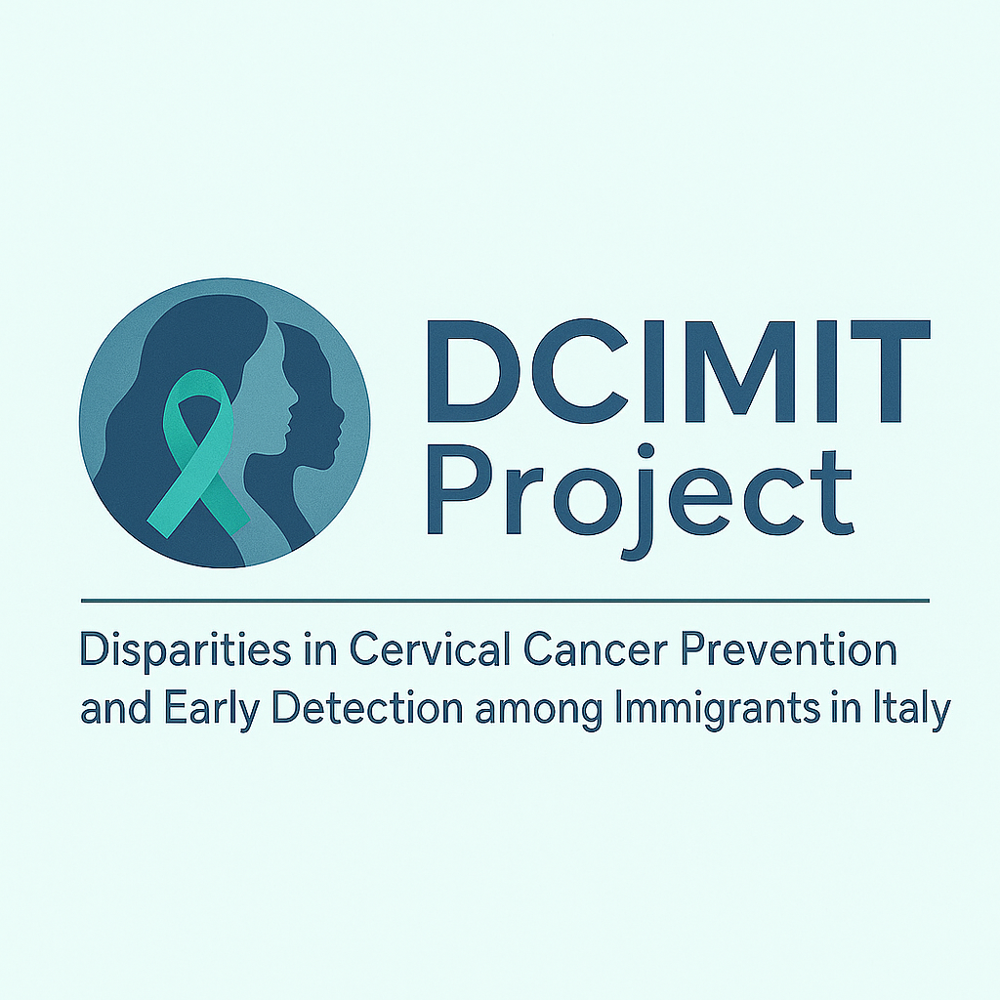
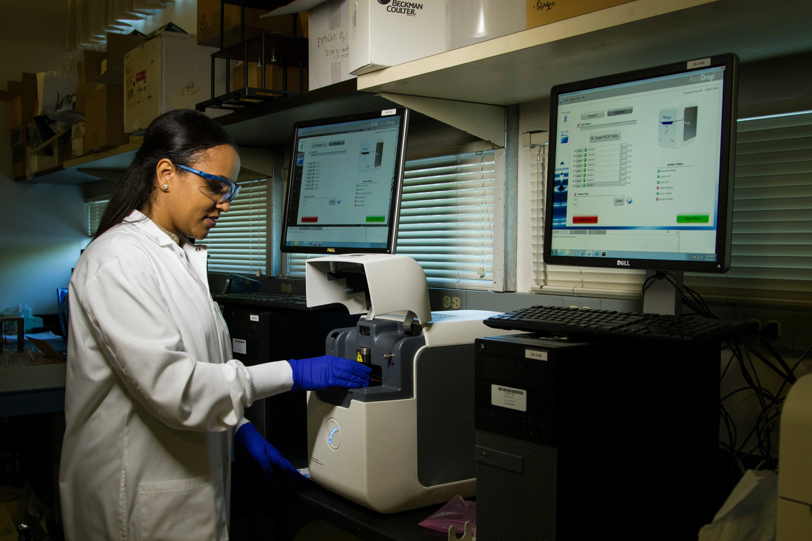
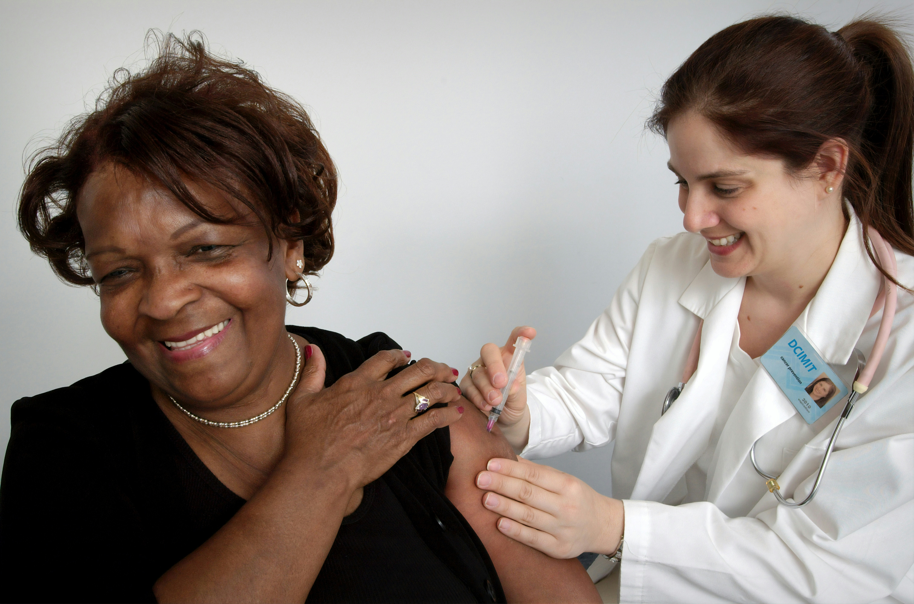

Cervical Cancer Prevention and Early Detection Among Immigrants in Italy
Understanding and addressing health inequalities between immigrant communities and Italian natives to improve cervical cancer prevention and screening outcomes.
Clinical Centres
+
Questionnaire Participants
Qualitative Interviews
2010 - 2010
National Registry Data Covered

Which category of user are you?
Choose the best suited option to reach the section of the website most useful for you.
Woman
In this section you will find information about cervical cancer
Researcher
investigate inequalities in cervical cancer prevention among immigrant women
The Challenge
Cervical cancer is highly preventable through regular screening, yet significant disparities exist in screening uptake and health outcomes between immigrant and native Italian populations.
Without comprehensive data on these disparities across different immigrant groups and regions, policymakers lack the evidence needed to design effective, culturally-sensitive interventions.


Addressing Health Inequalities in Cervical Cancer Prevention
Health inequalities in cervical cancer prevention can be influenced by differences in access to healthcare, health information, language, and socioeconomic circumstances. These factors may affect participation in screening and access to appropriate information and care.
DCIMIT investigates these inequalities among migrant populations in Italy, with the aim of improving understanding of the barriers that may contribute to differences in cervical cancer prevention and early detection.
By generating evidence on these barriers and identifying opportunities to improve access to screening and relevant health information, the project seeks to contribute to the development of more equitable approaches to cervical cancer prevention and early detection.
Research Objectives
A systematic approach to understanding and addressing cervical cancer disparities
Understand Experiences
Identify determinants influencing early detection and access to care among immigrant women through questionnaires (300 participants) and in-depth interviews (60 women) across 10 clinical centers.
- First step
Analyze Population Data
Compare cervical cancer incidence, mortality, and survival rates between immigrant and Italian-born women using national cancer registry data (2010-2022) in collaboration with AIRTUM.
- Second step
Test Interventions
Evaluate the effectiveness of culturally tailored educational programs in increasing cervical screening participation among 205 immigrant women in Rome compared to a control group in Milan.
- Final step